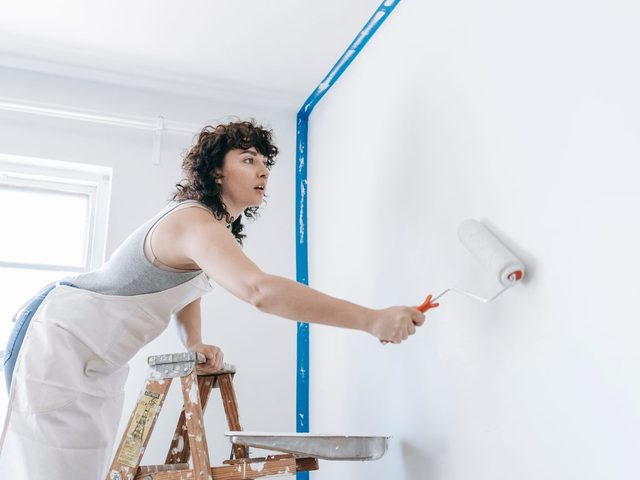
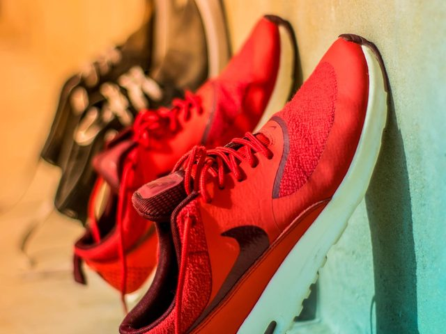
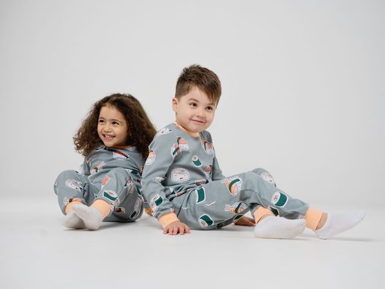
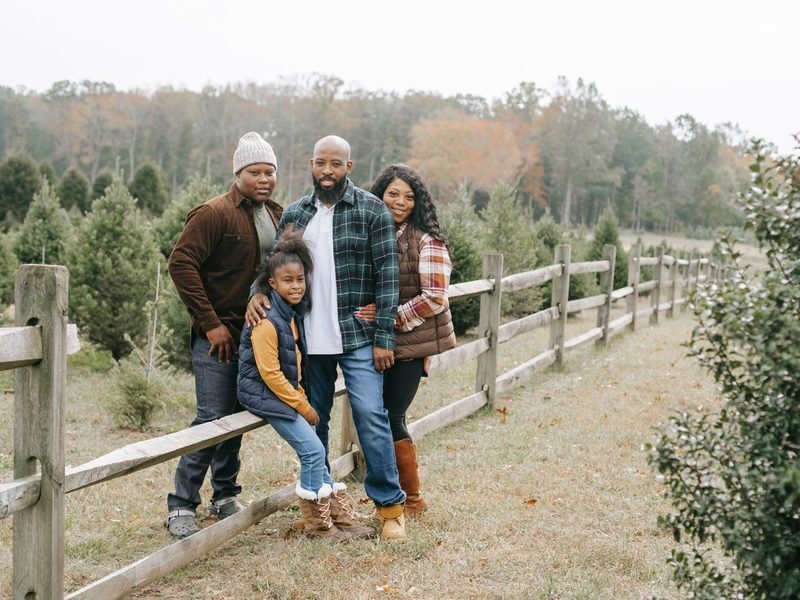
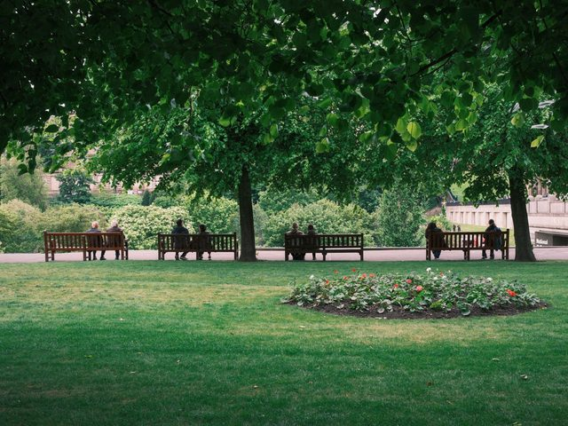
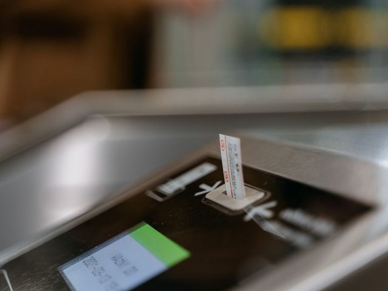
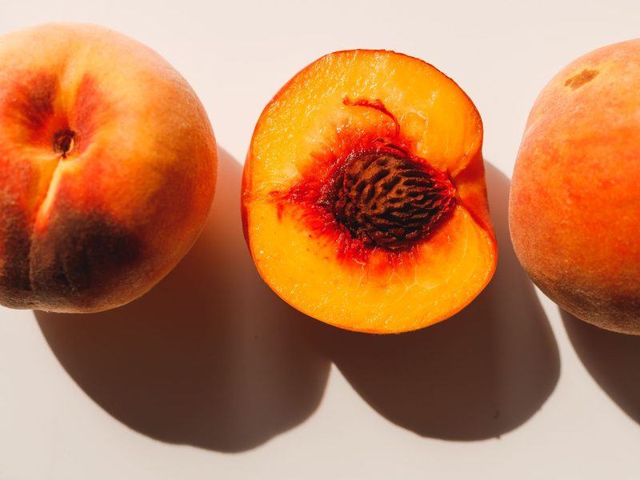
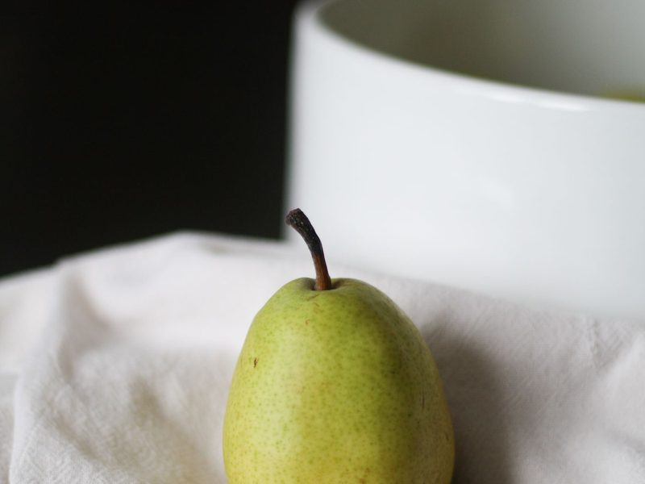

UNIT 34 · VOCABULARY
P 開頭（一）
P-I
42 個單字聽・唸・用
本單元單字一覽
WORD UP「P-I」的 42 個字（pack 到 people）。紅色＝要複習，藍色標籤＝WORD UP 標熟記、還要在這裡考對。
packpackagepagepainpainfulpaintpainterpaintingpairpajamaspalepanpandapantspapayapaperpardonparentParisparkparrotpartparticularpartnerpartypasspassengerpastpastepathpatientpatternpausepayPEpeacepeacefulpeachpearpenpencilpeople
每個字都有 🔊，先聽發音、跟著唸，再看例句。
單字 1–4

pack
打包；一包v./n.
Did you pack your bag?
你打包好行李了嗎？
你打包好行李了嗎？

package
包裹n.
A package came for you today.
今天有你的包裹。
今天有你的包裹。
page
頁n.
Open your book to page 20.
把書翻到第 20 頁。
把書翻到第 20 頁。
pain
疼痛n.
I have a pain in my back.
我背痛。
我背痛。
單字 5–8
painful
痛苦的；疼痛的adj.
The shot was painful.
打針好痛。
打針好痛。
paint
油漆；畫（顏料）v./n.
They painted the wall blue.
他們把牆漆成藍色。
他們把牆漆成藍色。

painter
畫家；油漆工n.
Van Gogh was a famous painter.
梵谷是有名的畫家。
梵谷是有名的畫家。
painting
畫作n.
This painting is very old.
這幅畫非常古老。
這幅畫非常古老。
單字 9–12

pair
一雙；一對n.
I need a new pair of shoes.
我需要一雙新鞋。
我需要一雙新鞋。

pajamas
睡衣n.
Put on your pajamas.
穿上睡衣。
穿上睡衣。

pale
蒼白的adj.
You look pale. Are you OK?
你臉色好蒼白，還好嗎？
你臉色好蒼白，還好嗎？
pan
平底鍋n.
Fry the egg in a pan.
用平底鍋煎蛋。
用平底鍋煎蛋。
單字 13–16
panda
貓熊n.
Pandas eat bamboo.
貓熊吃竹子。
貓熊吃竹子。
pants
褲子n.
These pants are too long.
這條褲子太長了。
這條褲子太長了。
papaya
木瓜n.
Papaya milk is popular in Taiwan.
木瓜牛奶在台灣很受歡迎。
木瓜牛奶在台灣很受歡迎。

paper
紙；報紙；報告n.
Give me a piece of paper.
給我一張紙。
給我一張紙。
單字 17–20
🙏
pardon
原諒；再說一次n./v.
Pardon? I didn't hear you.
什麼？我沒聽到。
什麼？我沒聽到。

parent
父或母n.
My parents are both teachers.
我爸媽都是老師。
我爸媽都是老師。
Paris
巴黎n.
The Eiffel Tower is in Paris.
艾菲爾鐵塔在巴黎。
艾菲爾鐵塔在巴黎。

park
公園；停車n./v.
You can't park here.
你不能在這裡停車。
你不能在這裡停車。
單字 21–24

parrot
鸚鵡n.
The parrot can say "Hello."
那隻鸚鵡會說「哈囉」。
那隻鸚鵡會說「哈囉」。

part
部分n.
I took part in the singing contest.
我參加了歌唱比賽。
我參加了歌唱比賽。
🔎
particular
特別的；特定的adj.
I like fruit, mangoes in particular.
我喜歡水果，尤其是芒果。
我喜歡水果，尤其是芒果。

partner
夥伴；搭檔n.
Find a partner and practice.
找個搭檔一起練習。
找個搭檔一起練習。
單字 25–28
party
派對n.
We'll have a party on Saturday.
我們星期六要開派對。
我們星期六要開派對。

pass
經過；通過；傳遞v.
Please pass me the salt.
請把鹽遞給我。
請把鹽遞給我。

passenger
乘客n.
The bus has thirty passengers.
公車上有三十位乘客。
公車上有三十位乘客。

past
過去；經過n./prep.
It's half past six.
現在六點半。
現在六點半。
單字 29–32

paste
漿糊；貼上n./v.
Copy and paste the text.
把文字複製貼上。
把文字複製貼上。
path
小徑n.
Follow the path to the lake.
沿著小徑走到湖邊。
沿著小徑走到湖邊。

patient
有耐心的；病人adj./n.
Be patient with your little brother.
對弟弟要有耐心。
對弟弟要有耐心。

pattern
圖案；模式n.
I like the pattern on your shirt.
我喜歡你襯衫上的圖案。
我喜歡你襯衫上的圖案。
單字 33–36
⏸️
pause
暫停n./v.
Pause the video for a minute.
把影片暫停一下。
把影片暫停一下。
pay
付錢v.
I paid 100 dollars for the book.
我花了一百元買這本書。
我花了一百元買這本書。

PE
體育（課）n.
We have PE on Tuesday.
我們星期二有體育課。
我們星期二有體育課。
peace
和平n.
Everyone wants peace.
每個人都想要和平。
每個人都想要和平。
單字 37–40
peaceful
和平的；寧靜的adj.
The village is quiet and peaceful.
這個村莊安靜又寧靜。
這個村莊安靜又寧靜。

peach
桃子n.
This peach is sweet and juicy.
這顆桃子又甜又多汁。
這顆桃子又甜又多汁。

pear
梨子n.
Would you like a pear?
你要吃梨子嗎？
你要吃梨子嗎？
pen
筆n.
May I borrow your pen?
我可以借你的筆嗎？
我可以借你的筆嗎？
單字 41–42

pencil
鉛筆n.
Write your answers in pencil.
用鉛筆寫答案。
用鉛筆寫答案。
people
人們n.
Many people like to go hiking.
很多人喜歡健行。
很多人喜歡健行。
重點整理
| 說法 | 中文 | 例子 |
|---|---|---|
| take part in | 參加 | take part in the race |
| pay for / pay + 錢 + for | 付…的錢 | pay 50 dollars for lunch |
| a pair of + 複數名詞 | 一雙、一條 | a pair of pants ／ a pair of glasses |
| pants / pajamas | 一定用複數 | My pants are new. |
| pain / painful | 疼痛（名詞）／ 痛苦的（形容詞） | a lot of pain ／ a painful shot |
| paint / draw | 用顏料畫 ／ 用筆畫線 | paint a picture ／ draw a line |
| half past + 幾點 | 幾點半 | half past seven |
people 已經是複數，不能說 peoples（指「人們」時）。
快問快答：中文 → 英文
1打包；一包pack
2頁page
3痛苦的；疼痛的painful
4畫家；油漆工painter
5一雙；一對pair
6蒼白的pale
7貓熊panda
8木瓜papaya
快問快答：英文 → 中文
1pardon原諒；再說一次
2Paris巴黎
3parrot鸚鵡
4particular特別的；特定的
5party派對
6passenger乘客
7paste漿糊；貼上
8patient有耐心的；病人
學完了！接下來
複習方法
review
- 回到「📗 單字卡」，按「遮中文」自己考自己
- 再按「遮英文」，看中文說出英文
- 每個例句跟著 🔊 唸一次
準備好了
- 按右上角「📝 前往測驗」
- 測驗錯的題目要訂正到全對
- 訂正完成補送 1 點